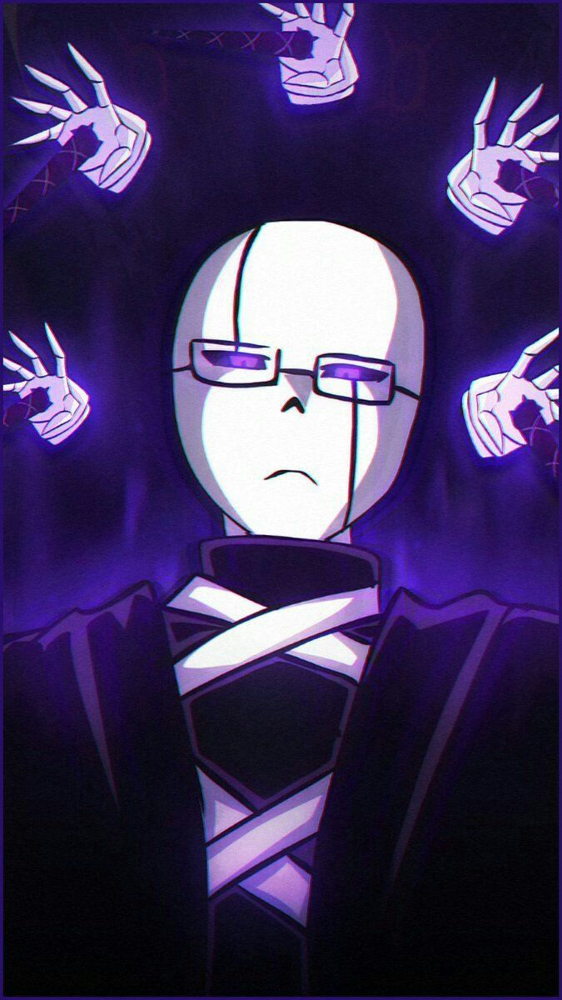

X-gaster
X-gaster, era o criador de xtale, com sua alma que tinha o poder de criar e sobscrever ele cirou o mundo de xtale que mais pra frente recoreu a sobescrevelo por 10 vezes
X-gaster tinha muita ambissão de fazer do seu mundo ser o mundo perfeito e por causa disso ele modificou ele 10 fezes criando coisas novas e modificando as mesmas

poderes
- criação
- deletar
- viajar pelo universo